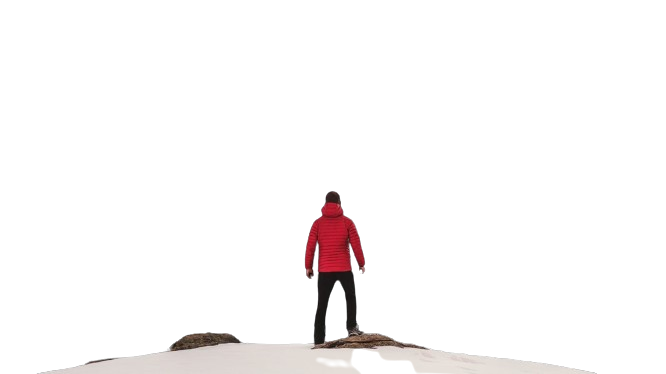
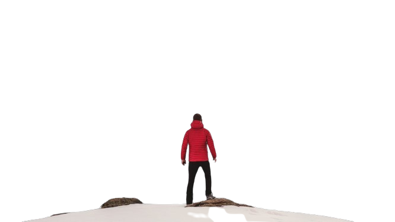

ADVENTURE
Adventure Time
"Adventure is the spirit of exploring the unknown, embracing challenges, and seeking excitement beyond the ordinary. It often involves stepping out of one's comfort zone, whether through travel, outdoor activities, or personal growth. Adventures can be both physical, like hiking in remote mountains or navigating a bustling city, and mental, like tackling new projects or facing fears. The essence of adventure lies in curiosity, courage, and the thrill of discovery. It teaches resilience, broadens perspectives, and fosters unforgettable memories, making life richer and more meaningful."
BIKING
"Biking is more than just a form of transportation; it’s an exhilarating way to connect with nature, explore new places, and stay fit. Whether it’s a leisurely ride through the park, a challenging mountain trail, or cycling through city streets, biking offers freedom and a sense of adventure. The rhythmic motion of pedaling, the breeze against your face, and the opportunity to discover hidden gems in your surroundings make biking a fulfilling experience. It's a low-impact exercise that strengthens the heart, tones muscles, and promotes overall health, making it a sustainable way to stay active.
Beyond the physical benefits, biking fosters a sense of community and camaraderie. Cycling events, group rides, and bike tours allow individuals to bond over shared experiences while appreciating the outdoors. It’s also an eco-friendly mode of transport that reduces carbon footprints and promotes a more sustainable lifestyle. Whether you’re an avid cyclist or a casual rider, biking offers a unique blend of exercise, exploration, and environmental consciousness, making it an activity with lasting positive impacts. ”
PARA GLIDING
"Paragliding is an exhilarating air sport that allows individuals to soar freely through the skies, offering a unique perspective of the world below. Using a lightweight, non-motorized parachute-like wing, paragliders are launched from a hill or mountain and use wind currents to stay aloft. The experience combines the thrill of flight with the serenity of nature, as pilots glide silently through the air, often for long distances. Paragliding is accessible to a wide range of people, from beginners to experienced pilots, and offers a sense of freedom and excitement that few other activities can match.
The sport requires a blend of skill, timing, and understanding of the wind and weather conditions. Paragliding not only offers a thrilling adventure but also fosters a deep connection with nature, as pilots often fly over stunning landscapes, from mountains to coastlines. It’s a sport that encourages personal growth, pushing participants to challenge their limits while respecting the natural environment. Whether flying solo or with a tandem instructor, paragliding offers a sense of freedom that few other outdoor activities can provide, making it a truly unforgettable experience.”
SURFING
"Surfing is an exciting and dynamic water sport that involves riding waves on a surfboard, offering a unique connection between the surfer and the ocean. It requires a combination of balance, strength, and timing, as surfers paddle out into the sea, wait for the perfect wave, and then ride it toward the shore. Surfing isn’t just about the thrill of riding waves; it’s also about understanding the ocean’s rhythms, learning how to read the waves, and developing the skills to master different types of surf conditions. Whether on a small beach break or a massive point break, surfing offers an adrenaline rush and a sense of freedom that few sports can match.
Beyond the physical challenges, surfing fosters a deep sense of respect for nature and the environment. Surfers are often closely connected to the sea, with a heightened awareness of the ocean’s power and beauty. It’s not just a sport but a lifestyle, often associated with a laid-back, adventurous attitude and a strong surf community. Whether it’s the joy of catching your first wave or the ongoing pursuit of perfecting techniques, surfing provides a rewarding experience that combines sport, nature, and personal growth, making it a cherished activity for many.”